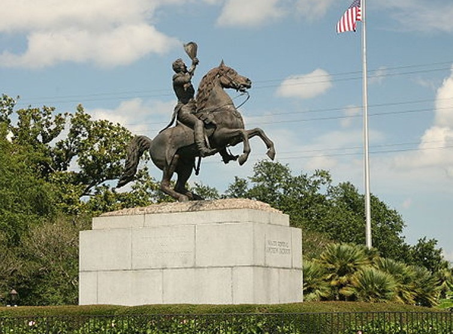

Johnnie and Oberta Baker's Photo Album Gallery Previous Next
|

The Battle of New Orleans T The fighting in Louisiana was really a series of battles for New Orleans, lasting from December 1814 through January 1815. On the Chalmette battleground , just below the city, a diverse force of soldiers, sailors, and militia, including Indians and African Americans, defeated Britain's finest white and black troops drawn from Europe and the West Indies. The American victory in the Gulf region forced the British to recognize United States claims to Louisiana and West Florida and to ratify the Treaty of Ghent, which ended the war. The Battle of New Orleans also marked the state's incorporation into the Union. |